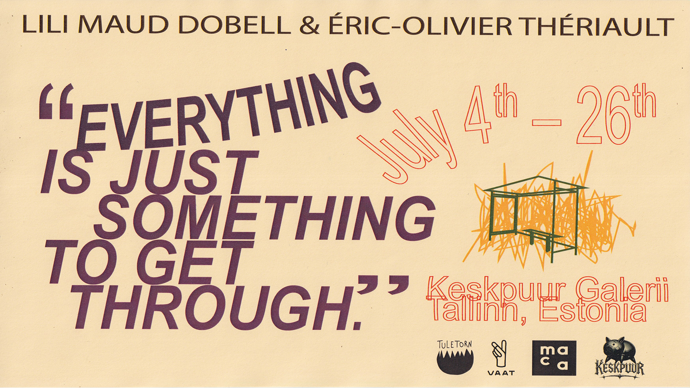

Everything is Just Something to Get Through
Lili Maud Dobell & Éric-Olivier Thériault
04.07-26.07.2026

------------
Everything is Just Something to Get Through
Opening : 04.07.26, 13:00
Keskpuur is pleased to announce Everything is Just Something to Get Through – the first international exhibition by the artist duo LMEO. Originally from Montréal and now based in Tallinn, LMEO brings together their individual practices through a collaborative approach rooted in sculpture, installation, and performance.
As temporary residents in Estonia, the artists have developed the exhibition through the observant gaze of newcomers. This exhibition challenges concepts of spectatorship and its relation to urban systems, drawing attention to the ways public infrastructures can function [or can be understood] as choreography.
The exhibition evokes a feeling of displacement or loneliness that blends into the anonymity of public space. Through flickering lights, industrial assemblages, and images of the mundane, Everything is Just Something to Get Through reflects on the banal structures that shape contemporary life and reimagines them as theatrical settings. LMEO invites viewers to encounter these environments with the heightened awareness of a visitor or outsider, while considering how spiritual presence and emotional connection might inhabit ordinary spaces as a means of communicating across distance and coping with grief and loss.
Lili Maud Dobell and Éric-Olivier Thériault have worked collaboratively since October 2022, after meeting while completing their BFAs at NSCAD University. After establishing an alternative gallery space in Halifax, Canada, the artists moved to Estonia to pursue graduate studies at the Estonian Academy of Arts in the Contemporary Art MA programme. The pair uses collaboration as a meeting ground for a shared artistic vision, resisting singular authorship.
The acronym LMEO stands for "Laughing My Ears Off" while also referencing the initials of their first names.
Both artists specialize in sculptural practices that invite or consider bodily interaction with materials. Their collaborative practice speaks in a tone they describe as "pathetic poetry". Through their durational works, they coined the term Proof of Performance to describe the sculptural act of making through being.
Central to the pairs joint practice is the gathering and assemblage of found objects, reflecting a commitment to a sustainable artistic language that considers the relevance and utility of the readymade within a context of climate and socio-political crisis. As a result, the seemingly mundane spaces where the reflection and the non-doing aspects of a sculptural practice are activated become the subject for the artwork itself.
The exhibition was supported by Tuletorn Brewery and Vaat Brewery.